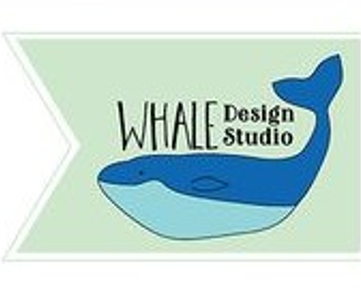

Logo Project: Whale Design Studio

This webpage was created to showcase the logo I created for Whale Design Studios.
It includes, but is not limited to, the process of creating the logo, rationale for color choices, appeal to target audience, and design skills.
Here are some of my thoughts about creating this logo design:
- I created this logo in Adobe Illustrator. I primarily used the pen tool and the direct selection tool to modify points. I also used the rectangle shape tool.
- I chose to use an analogous color scheme for this logo. I chose the colors blue, teal, and green. These colors reminded me of water and fit well with the whale icon.
- I feel this logo appeals to the target audience for several reasons. The name of the business, Whale Design Studio, has a quirky sort of feel. The whale icon fits with this quirky kind of vibe, and it has a happy little smile that seems inviting. I also feel that the banner shape behind the whale icon is interesting and maybe a little different from other design logos that I have seen. Overall, it gives the logo a kind of fresh appeal and personality that drew me in if I were looking for design services.
- This logo incorporates the following design skills: tasteful typography, asymmetry, and color theory. This logo is asymmetrical, which adds visual interest the way that soft tones contrast with each other. The design is asymmetrical and yet still cohesive, while still remaining balanced. The colors used work well with the whale icon without creating contrast.
Visit my blog to see more about this logo: Business Identity Project